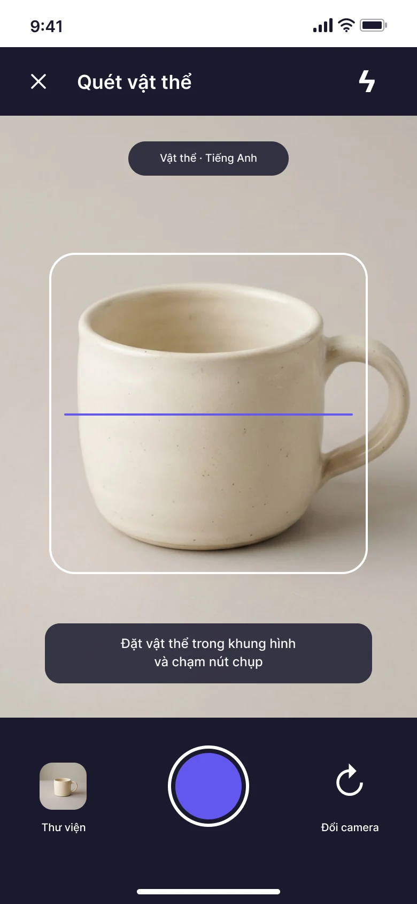

Mỗi đồ vật,
một từ mới.
Từ chiếc cốc trên bàn đến chậu cây bên cửa sổ, quét đồ vật quanh bạn để học tên tiếng Anh và ôn lại bằng flashcard.

Cách học
Học một từ trong ba bước.
Từ một lần chạm máy ảnh đến lúc tự gọi tên đồ vật bằng tiếng Anh.
-
Bước 1
Quét đồ vật
Hướng camera vào đồ vật để xem tên tiếng Anh, nghĩa tiếng Việt và nghe cách đọc.
-
Bước 2
Lưu vào flashcard
Giữ lại bức ảnh vừa quét cùng phiên âm và câu ví dụ trong bộ thẻ của riêng bạn.
-
Bước 3
Lật thẻ, nhớ từ
Nhìn ảnh, thử gọi tên rồi lật thẻ. Đánh dấu từ cần ôn lại và theo dõi tiến độ từng ngày.
Giao diện ứng dụng
Bên trong Scanlinguo.
Khám phá 10 màn hình của ứng dụng. Chọn một hình để xem chi tiết.
Về dự án
Quen đồ vật,
nhớ cả tên gọi.
Bạn từng học một từ tiếng Anh nhưng lại quên ngay khi cần gọi tên món đồ trước mặt? Scanlinguo lấy chính khoảnh khắc ấy làm điểm bắt đầu.
Dành cho người học trực quan
Học sinh, sinh viên và người tự học muốn mở rộng vốn từ tiếng Anh từ những vật quen thuộc ở nhà, ở lớp hay nơi làm việc.
Mỗi từ gắn với một trải nghiệm
Bức ảnh bạn tự chụp là gợi ý cho lần ôn sau. Nhìn lại chiếc cốc của mình, thử nhớ từ “mug”, rồi nghe và kiểm tra đáp án.